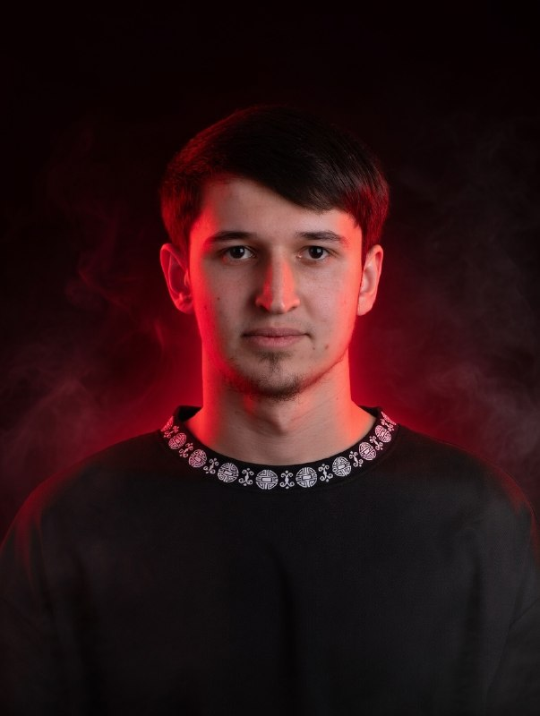

PROJECT
Будущее начинается здесь

Старт пути
Январь 2024. Начало разработки архитектуры.
Бета-тест
Март 2025. Запуск закрытого тестирования.
Обновление 1.0
Добавлен новый интерфейс и оптимизация.
Будущее начинается здесь

Январь 2024. Начало разработки архитектуры.
Март 2025. Запуск закрытого тестирования.
Добавлен новый интерфейс и оптимизация.